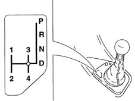
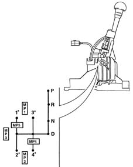
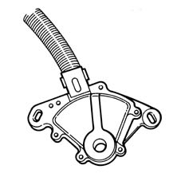

2135A automatic transmission manual controls
- Path
- Descriptions > 21 GEARBOX > 2135 AUTOMATIC TRANSMISSION EXTERNAL CONTROLS > 2135A automatic transmission manual controls
- Kind
- system description
- Applies to
- engines: 2.5 V6; all production periods
- Interactive page
- https://sloeber94.github.io/elrnDB-a156/en/#/3232908
Applies to: engines: 2.5 V6; all production periods; only with equipment: Automatic transmission
GEAR SELECTOR LEVER
The gear selector lever can assume the following positions in automatic mode:
- P, park
- R, reverse
- N, neutral
- D, drive
and the following positions in manual mode:
- 1st speed
- 2nd speed
- 3rd speed
- 4th speed.
Lift the ring beneath the selection lever knob for the following shifts:
- from P to R and viceversa
- from N to R.

Information on gear selector lever position (P - R - N - D) is supplied to the CAE control unit by a sensor fitted externally on the gear casing and connected to the lever mechanically (bowden cable) and electrically.
The CAE control unit sends the control panel a coded signal via a dedicated serial line in order to display corresponding lever position and operating mode (SPORT, CITY or ICE).

The lever may be shifted from position D to manual mode by moving it to the left in the selection gate.
Special switches allow the CAE control unit to identify:
- changeover from automatic to manual mode
- changeover from one speed to another while in manual mode
- lever position.
GEAR LEVER POSITION SENSOR
This is located on the front part of the gear casing. It detects gear selection lever position (it is mechanically connected to the lever) and informs the CAE control unit by means of an electrical signal.
The CAE control unit turns on the relevant warning light on the control panel.
The sensor also:
- turns on the reversing lights when reverse is engaged
- enables engine start-up with the speed selection lever set to N or P .
